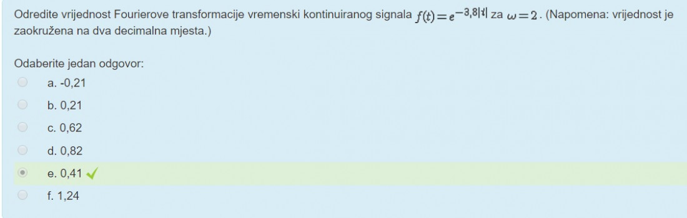
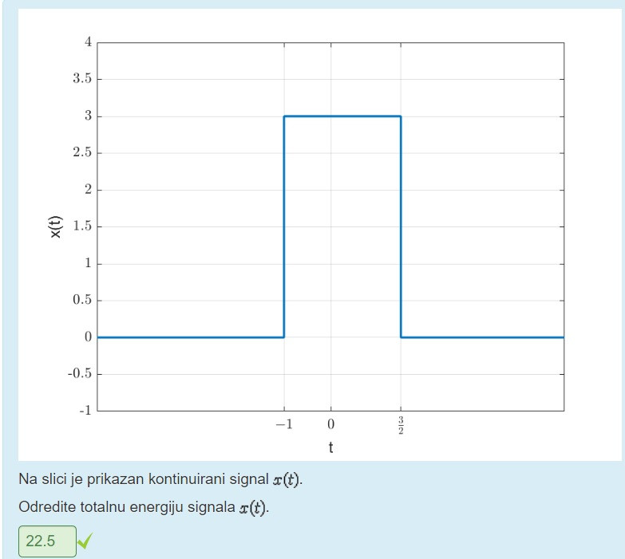
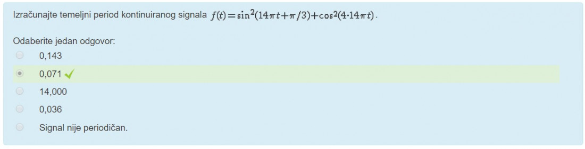

dammitimmad Od teorije je bilo samo: 4. Ako je signal periodičan, pripadajući spektar je uvijek → diskretan, Ako je signal diskretan, pripadajući spektar je uvijek → periodičan, Ako je signal kontinuiran, pripadajući spektar je uvijek → aperiodičan, Ako je signal aperiodičan, pripadajući spektar je uvijek → kontinuiran.
Bilo je 8 zadataka, prva 4 laksa i druga 4 teza.


